Loading model…

All 3D models made by Sander Joon in Blender.
Drag to rotate
Pinch or Scroll to Zoom
Drag with three fingers move the cutting plane.
Motion On for auto-rotation
Reset to get back to front view
Use Previous, Next, or ? button for a random model.
Enable Gyroscope to rotate with phone.
Disclaimer: This stratacut playback prototype is made with LLMs. I know - it's wasteful and shameful, but I'm nowhere near with my programming skills to create a realtime boolean cut 3D rendering app. Please reach out to sander.joon@gmail.com if you can help me make a proper, texturable, and scalable human-made Stratacutoscope!